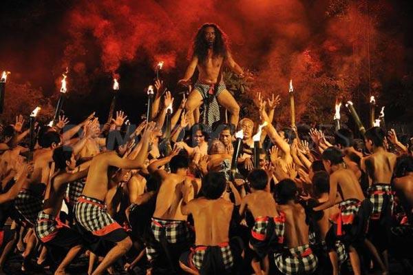

Tari Kecak Ubud
Gambaran Tari Kecak Api Ubud

Untuk mencari lokasi dari tiap-tiap pementasan dari tarian kecak di Ubud, tentunya bagi anda yang tidak terlalu paham akan jalan-jalan di Ubud, maka akan kesulitan. Selain itu, jika anda memutuskan membawa kendaraan sendiri, untuk mencari tempat parkir di kawasan objek wisata Ubud, akan sangat susah. Ini dikarenakan sangat jarang tersedia lahan parkir dan sebagian besar, orang parkir dipinggir jalan dan lebih cendrung penuh dan susah untuk mencari.
Oleh sebab itu, jika anda berencana wisata ke Ubud dan memutuskan untuk menonton tari kecak api di Ubud, sebaiknya menggunakan jasa sewa mobil dengan driver di Bali. Dengan cara sewa mobil di Bali dengan supir, anda tidak perlu susah untuk mencari lokasi pementasan dan tempat parkir mobil
Selain di Ubud, tempat pementasan tarian kecak yang paling populer adalah di pura Uluwatu. Kenapa tarian kecak di Pura Uluwatu diminati oleh wisatawan? Hal ini dikarenakan pada saat menonton tari kecak di Uluwatu, wisatawan dapat menikmati matahari terbenam, sebagai latar belakang.
Gambaran Tari Kecak Api Ubud di Pura Uluwatu

Hari Minggu
| Lokasi Pentas | Jam | Oleh | Harga Tiket |
| Padang Tegal Kaja | 19:00 | Trene Jenggala | Rp. 75.000,- |
| Pura Batukaru | 19:30 | Desa Adat Sambahan | Rp. 75.000,- |
Hari Senin
| Lokasi Pentas | Jam | Oleh | Harga Tiket |
| Desa Junjungan | 18:30 | Desa Adat Junjungan | Rp. 75.000,- |
| Pura Dalem Ubud | 19:30 | Adat Ubud Kaja | Rp. 80.000,- |
Hari Selasa
| Lokasi Pentas | Jam | Oleh | Harga Tiket |
| Jaba Pura Taman Sari | 19:00 | Sandhi Suara | Rp. 75.000,- |
Hari Rabu
| Lokasi Pentas | Jam | Oleh | Harga Tiket |
| Padang Tegal Kaja | 19:00 | Trene Jenggala | Rp. 75.000,- |
| Pura Dalem Taman Kaja | 19:30 | Desa Adat Taman Kaja | Rp. 75.000,- |
| Pura Batu Karu | 19:30 | Desa Adat Ubud Tengah (Penari Wanita) | Rp. 80.000,- |
Hari Kamis
| Lokasi Pentas | Jam | Oleh | Harga Tiket |
| Puri Agung Peliatan | 18:45 | Semara Madya | Rp. 75.000,- / Orang |
| Puri Jaba Pura Taman Sari | 19:30 | Sandhi Suara | Rp. 75.000,- / Orang |
| Pura Batu Karu | 19:30 | Desa Adat Sambahan | Rp. 75.000,- / Orang |
Hari Jumat
| Lokasi Pentas | Jam | Oleh | Harga Tiket |
| Pura Padang Kertha | 19:00 | Padang Subadra | Rp. 75.000,- |
| Pura Dalem Ubud | 19:30 | Desa Adat Ubud Kaja | Rp. 80.000,- |
Hari Sabtu
| Lokasi Pentas | Jam | Oleh | Harga Tiket |
| Padang Tegal Kaja | 19:00 | Trene Jenggala | Rp. 75.000,- |
| Pura Dalem Taman Kaja | 19:30 | Desa Adat Taman Kaja | Rp. 75.000,- |
Selain jadwal rutin dari tari kecak Ubud diatas, ada jadwal tari kecak lain yang hanya diadakan pada saat bulan purnama. Tempat pementasan pada saat bulan purnama adanya di Museum Arma Ubud, jadwal pentas pada jam 18:45, dengan harga tiket Rp. 100.000.
Mohon dicatat, harga tiket dapat berubah sewaktu-waktu.
Untuk mencari lokasi dari tiap-tiap pementasan dari tarian kecak di Ubud, tentunya bagi anda yang tidak terlalu faham akan jalan-jalan di Ubud, maka akan kesulitan. Selain itu, jika anda memutuskan membawa kendaraan sendiri, untuk mencari tempat parkir di kawasan objek wisata Ubud, akan sangat susah. Ini dikarenakan sangat jarang tersedia lahan parkir dan sebagian besar, orang parkir dipinggir jalan dan lebih cendrung penuh dan susah untuk mencari.
Oleh sebab itu, jika anda berencana wisata ke Ubud dan memutuskan untuk menonton tari kecak api di Ubud, sebaiknya menggunakan jasa sewa mobil + driver di Bali. Dengan cara sewa mobil di Bali dengan supir, anda tidak perlu susah untuk mencari lokasi pementasan dan tempat parkir mobil.
Selain di Ubud, tempat pementasan tarian kecak yang paling populer adalah di pura Uluwatu. Kenapa tarian kecak di Pura Uluwatu diminati oleh wisatawan? Hal ini dikarenakan pada saat menonton tari kecak di Uluwatu, wisatawan dapat menikmati matahari terbenam, sebagai latar belakang.